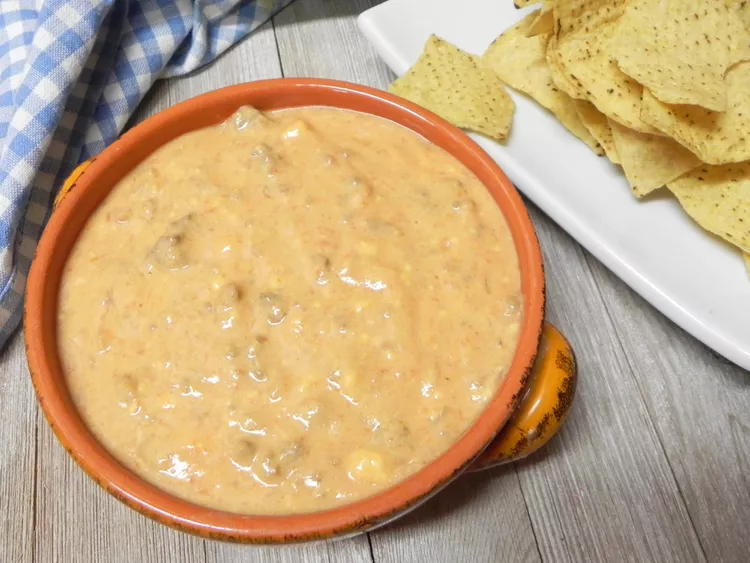

Cheese Dip

Introduction
This cheese dip has all the best ingredients! I compiled it from various other recipes and it's my favorite by far. Serve as a dip at a party or with sour cream and jalapeños to make nachos.
Ingredients
- Two 16oz blocks of cheese
- Ground beef
- 1 medium onion
- Cream cheese
- Two cans of tomatoes
- Milk
Steps
- Cook the ground beef until done and remove from the pan
- Cook diced onion until soft
- Return meat to pan and combine with onion and cream cheese
- Then insert milk, tomatoes, and blocks of cheese
- Cover the pot and cook until all cheese has melted
Home